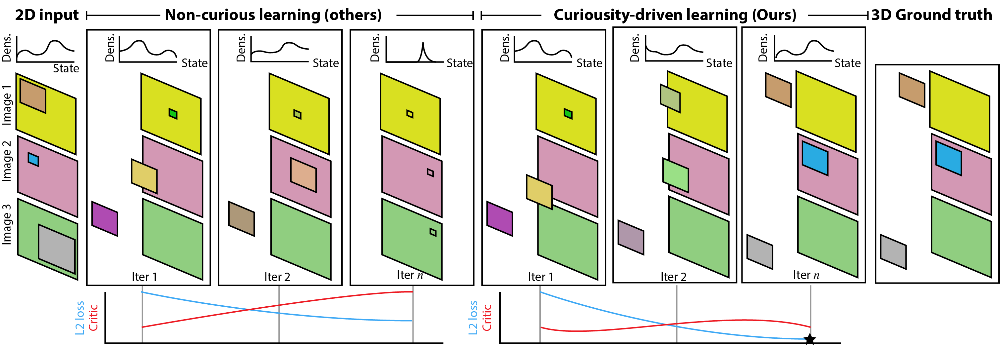

Abstract
Previous work has demonstrated learning isolated 3D objects (voxel grids, point clouds, meshes, etc.) from 2D-only self-supervision. We here set out to extend this to entire 3D scenes made out of multiple objects, including their location, orientation and type, and the scenes illumination. Once learned, we can map arbitrary 2D images to 3D scene structure. We analyze why analysis-by-synthesis-like losses for supervision of 3D scene structure using differentiable rendering is not practical, as it almost always gets stuck in local minima of visual ambiguities. This can be overcome by a novel form of training: we use an additional network to steer the optimization itself to explore the full gamut of possible solutions i.e. to be curious, and hence, to resolve those ambiguities and find workable minima. The resulting system converts 2D images of different virtual or real images into complete 3D scenes, learned only from 2D images of those scenes.
Cite
@article{griffiths2020finding,
title={Curiosity-driven 3D Scene Structure from Single-image Self-supervision},
author={Griffiths, David and Boehm, Jan and Ritschel, Tobias},
journal={arXiv preprint arXiv:2012.01230},
year={2020}
}
Contact.
- Dept. Computer Science,
- 66-72 Gower Street,
- University College London,
- London,
- WC1E 6EA